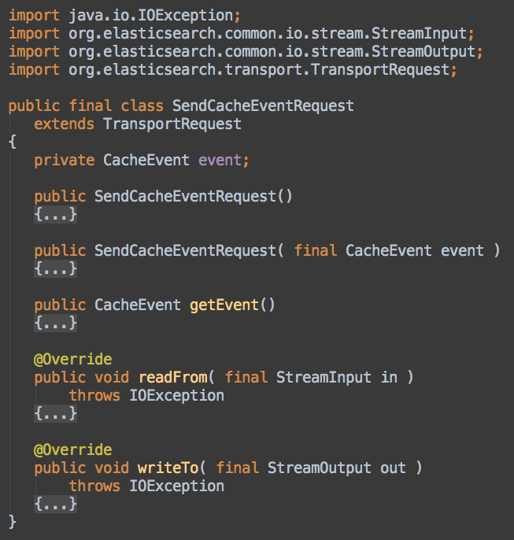
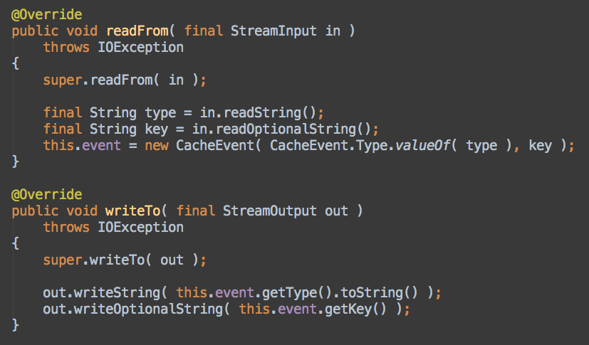
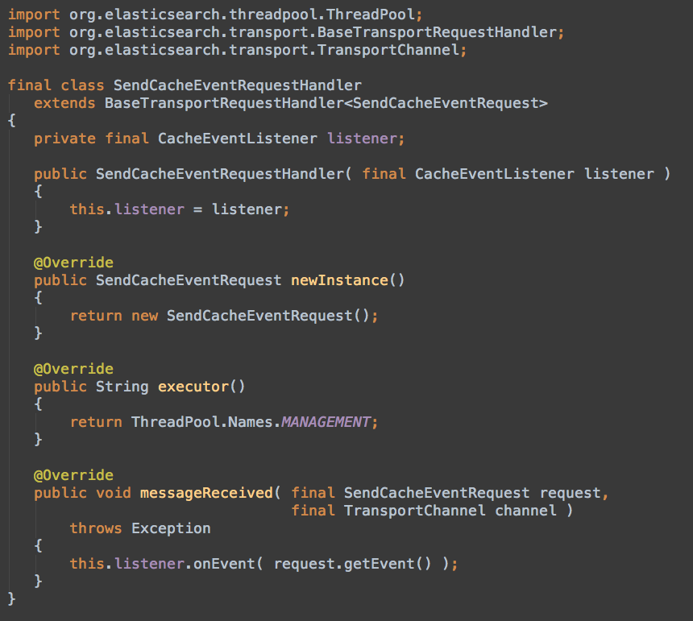
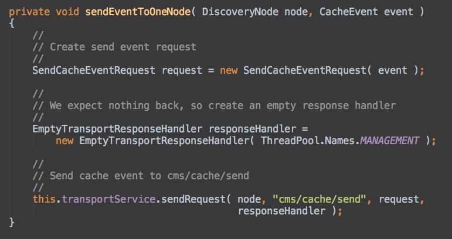

ElasticSearch Integration
in Enonic CMS
Sten Roger Sandvik /
srs@enonic.com
Warning!
Massive
Java
usage ahead
Enonic
CMS
Custom
query
language
Starting
& stopping
Custom
transport
requests
Cache
event
& listener
Custom
request object


Custom
request handler

Wire
it together

Why
not
plugins?
Custom Lifecycle, Spring IoC, Guice package name
Thanks!
srs@enonic.com
http://github.com/enonic
http://srs.github.com/presentations/es-integration-2013